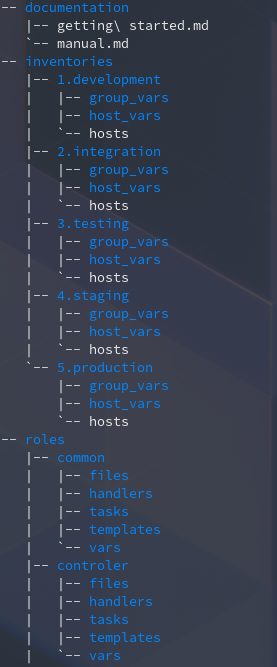

Conversation with 2345422802147713 at pon, 30 mar 2020, 15:14:06 on mateusz.stomski (facebook)
(15:14:05) Mateusz Stomski: 
(15:14:36) Mateusz Stomski: z podziałem na etapy provisioningu i role
(15:14:58) Tomasz Osławski: jebaniutki, juz patrze
(15:15:03) Mateusz Stomski: dla wszystkiego osobne zmienne, pliki, zaczepy, zadania
(15:15:33) Tomasz Osławski: niezle :)
(15:15:35) Mateusz Stomski: tylko w sumie zapomniałem o faktach
(15:16:04) Mateusz Stomski: nie wiem gdzie fakty powinny być w takim wypadku